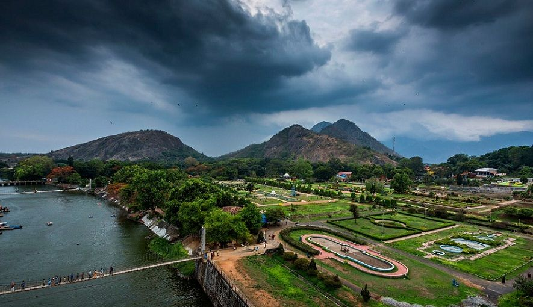
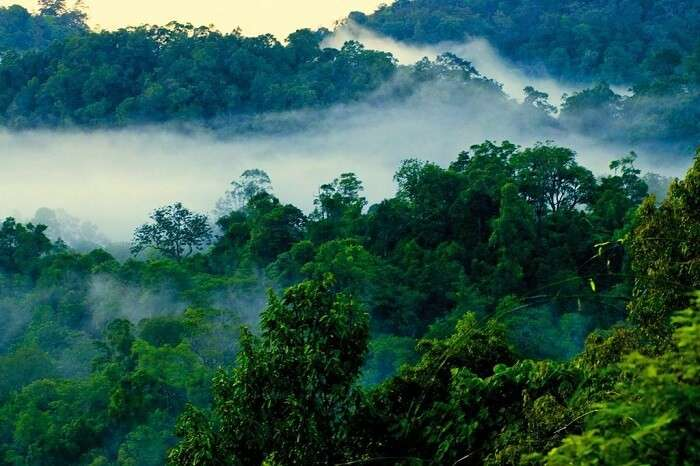

A quaint little hamlet located on the banks of river Bharatpuzha, Ottapalam is one of the most serene and tranquil places to visit in Palakkad. The virgin environs paired with untouched natural beauty make for an idyllic getaway for weary travellers.
Last updated 3 mins ago

Spread over an area of nearly 400 square meters, the wildlife sanctuary is one of the most famous Palakkad tourist places for its Wild Tiger Reserve.Wildlife enthusiasts and thrill seekers will find it perfect to spend a day among the plethora of flora and fauna of the sanctuary along with the large population of royal Bengal tigers housed here
Last updated 3 mins ago

Just 2 kms from Palakkad railway station is the beautiful temple of Vadakkanthara, one of the most important Palakkad tourist places. The temple complex is dedicated to the worship of Devi, a revered form of Kannagi.It holds a special place in the hearts of Hindu devotees and followers of the Devi. The Pooja time is considered extremely sacred and the temple complex is thronged by tourists whenever the aarti is held.
Last updated 3 mins ago